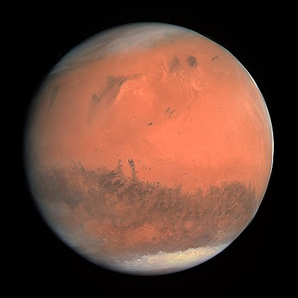

Der Mars ist, von der Sonne aus gezählt, der vierte Planet im Sonnensystem und der äußere Nachbar der Erde. Er zählt zu den erdähnlichen (terrestrischen) Planeten. Sein Durchmesser ist mit knapp 6800 Kilometern etwa halb so groß wie der der Erde, sein Volumen beträgt gut ein Siebtel des Erdvolumens. Damit ist der Mars nach dem Merkur der zweitkleinste Planet des Sonnensystems, hat jedoch eine vielfältige Geologie und die höchsten Vulkane des Sonnensystems. Mit einer durchschnittlichen Entfernung von 228 Millionen Kilometern ist er rund 1,5-mal so weit von der Sonne entfernt wie die Erde. Die Masse des Mars beträgt etwa ein Zehntel der Erdmasse. Die Fallbeschleunigung auf seiner Oberfläche beträgt 3,69 m/s², dies entspricht etwa 38 % der irdischen. Mit einer Dichte von 3,9 g/cm³ weist der Mars den geringsten Wert der terrestrischen Planeten auf. Deshalb ist die Schwerkraft auf ihm sogar geringfügig niedriger als auf dem kleineren, jedoch dichteren Merkur. Der Mars wird auch als der Rote Planet bezeichnet. Diese Färbung geht auf Eisenoxid-Staub (Rost) zurück, der sich auf der Oberfläche und in der dünnen CO2-Atmosphäre verteilt hat. Seine orange- bis blutrote Farbe und seine Helligkeitsschwankungen am irdischen Nachthimmel sind auch der Grund für seine Namensgebung nach dem römischen Kriegsgott Mars.[3] In größeren Fernrohren deutlich sichtbar sind die zwei Polkappen und mehrere dunkle Ebenen, die sich im Frühjahr etwas verfärben. Fotos von Raumsonden zeigen eine teilweise mit Kratern bedeckte Oberfläche und starke Spuren früherer Tektonik (tiefe Canyons und einen über 20 km hohen Vulkan). Marsroboter haben schon mehrere Gebiete geologisch untersucht. Der Mars besitzt zwei kleine, unregelmäßig geformte Monde, die 1877 entdeckt wurden: Phobos und Deimos (griechisch für Furcht und Schrecken).
 1 2 3 45
6 7 8 9